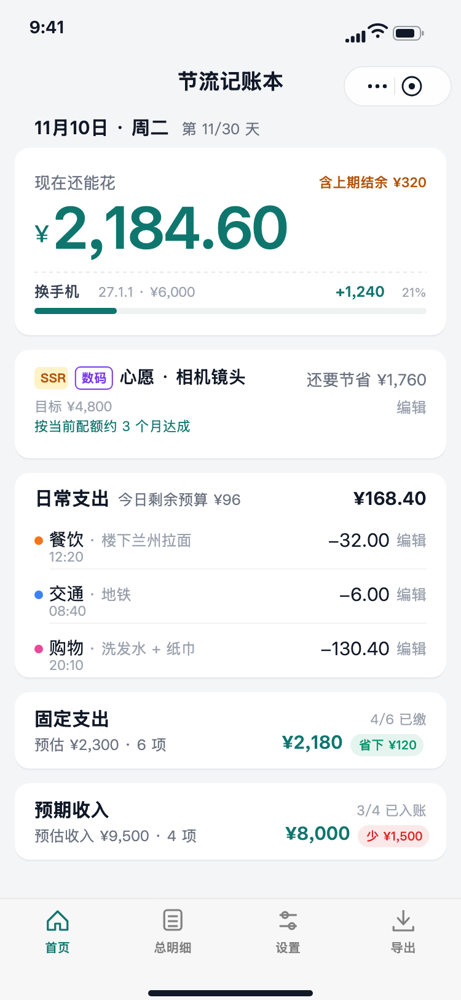
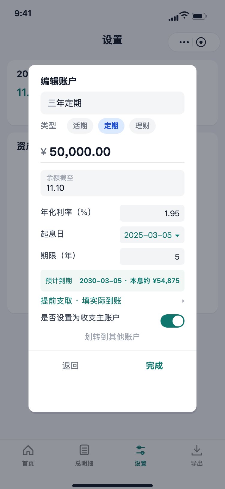

我做了一个反过来的记账工具：不是月底告诉你花超了多少，而是每天先发一笔额度，首页只回答「现在还能花」。
从 0 到 1 独立完成产品定义、业务口径、界面与开发，用微信小程序加云开发上线，之后持续迭代了二十多个版本。这篇拆的是其中四个关键判断、各自的代价，以及我做错的地方。
01背景与问题
为什么做，给谁用
主流记账工具的口径是「记录 + 月报」：先把每一笔花出去的钱记下来，月底告诉你超没超。它给的是复盘，不是决策——等看到报表，钱已经花完了。
我自己记账时卡在同一件事上：月初设了预算，到了月中还是不知道今天这笔能不能花。要回答这个问题，得拿总预算减掉已花、再除以剩余天数，还要把房租这类固定支出和临时借钱剔出去。心算几乎不可能，所以大多数时候干脆不记，月报也就更不准。
能不能让首页直接给出一个当天可执行的数字，而不是一张月末的报表？
目标用户：想把开支管住、但不愿意每天做算术的人。首先是我自己，所以需求来自反复卡住的真实场景，而不是问卷。
02我的角色
具体负责什么
产品定义、业务口径、信息结构与交互、小程序前端、云函数与数据表设计、发布运维，全部由我一个人完成。没有团队分工，因此下面每个取舍都能说清「当时还有哪条路、为什么没走、代价是什么」。
技术形态：微信小程序原生 + 云开发。业务层统一收在 store.js，页面不直连数据库；云函数做表与字段白名单、按用户隔离数据；前端改动跑离线用例后再提交。
03关键判断
四条决策：备选项、选择与代价
按日发额度，而不是按月给一个总预算
固定支出与借钱，都不占日常配额
结余必须被处理，不能自动滚存
期初快照的基准日，不等于余额的显示日期
04方案与流程
从发额度到处理结余的闭环
结算结果落到存款账户或攒钱目标，再成为下一期的期初。记一笔支持支出、收入、心愿、借钱四种形态，外加「稍后再存」清单：一批账统一一个保存按钮逐条写库，失败的那几笔留在队列里，不丢账。




完整 11 张界面稿见附录，均为矢量重绘、图层可编辑，可直接导入 Figma 或墨刀。
05结果与验证
已经做到的，和还没有的
- 从 0 到 1 独立完成并上线：小程序前端、云函数、数据表、字段白名单与用户隔离，全部可用。
- 持续迭代二十多个版本，覆盖补账、借钱台账、存款账户、周期结算、攒钱目标，每次改动先跑离线用例再提交。
- 用真实银行卡余额做过一次期初快照校准，逐笔对账到分位，确认「截至今天的余额」口径与卡面一致。
这块作品目前的短板
以自用和小范围试用为主，没有大样本留存、转化或付费数据，任何增长结论都无从谈起。
变现只做过政策核实（个人主体可开虚拟支付），没有上线验证。
没有做过正式用户访谈，需求主要来自我自己记账时反复卡住的地方。这一点在面试里我会直说，不拿「用户反馈」当说辞。
06复盘
四个做错或做晚了的地方
补账改了四版，才想清楚心智模型
先做首页右下角的补账弹层，又并进「记一笔」的第五个标签，再改成暂存清单，最后收敛成「一个按钮保存全部、失败留队」。回头看，前几版都在换入口，真正没想明白的是：用户是在补一笔旧账，还是在连续记一批账。入口应该最后定，心智模型应该先定。
发布流程出过一次越界
有一次按迭代惯例把开发版本直接上传了，没有经过确认。之后把上传、设体验版、提审、发布全部从自动收尾流程里拿掉，改成每次必须显式授权；云函数部署同理，因为动的是线上真实数据。流程上的权力得先关进笼子，再谈效率。
删 UI 时没删干净可达性
设置页删掉了「借出借入」整行入口，但路由、台账页和数据结构都保留着，结果功能还在、用户却进不去。删一个入口之前，应该先把「还有谁能到达它」列一遍。
字段白名单是部署态，不是代码态
给云函数的数据表加了列、本地自测通过，云端却按旧白名单把新字段静默丢掉，界面表现是「填了保存不上」，没有任何报错。之后凡是动表结构，部署云函数与上传版本绑成同一个检查项，不再当两步看。
07附录
源文件与材料说明
界面元素为矢量重绘，非真机截图；画面内的金额、日期、账户名均为演示样例数据。产品逻辑与文案按线上小程序还原。